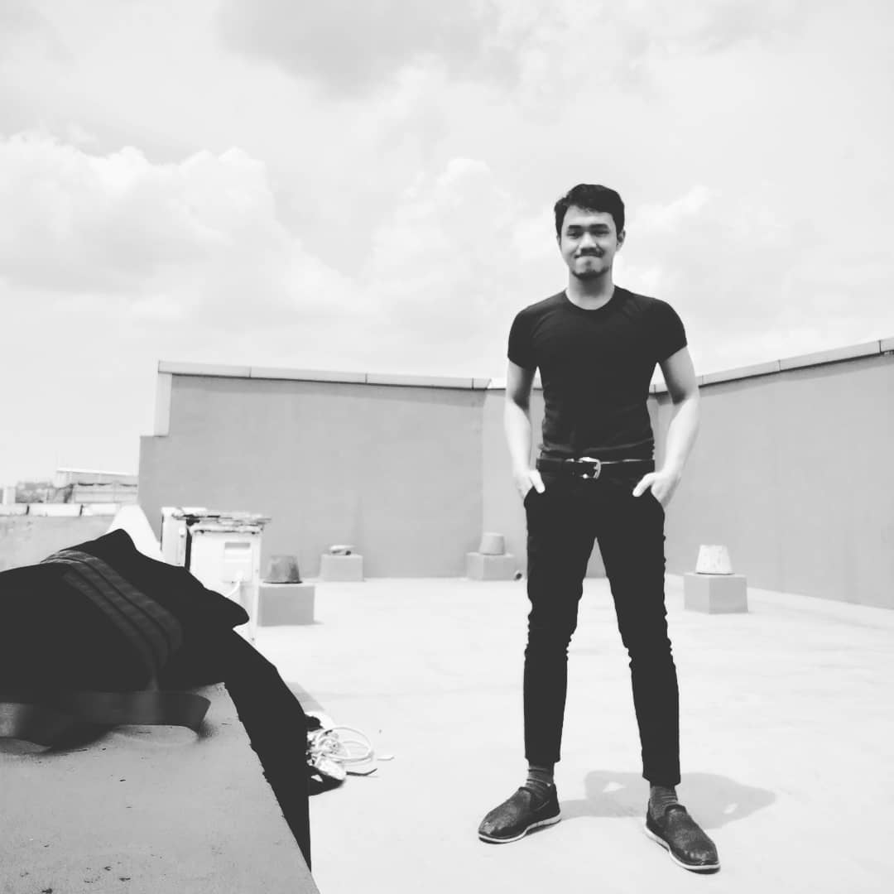
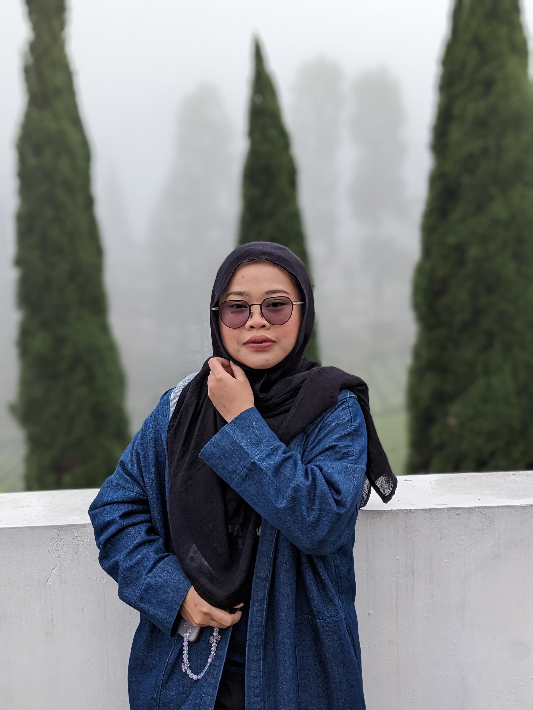
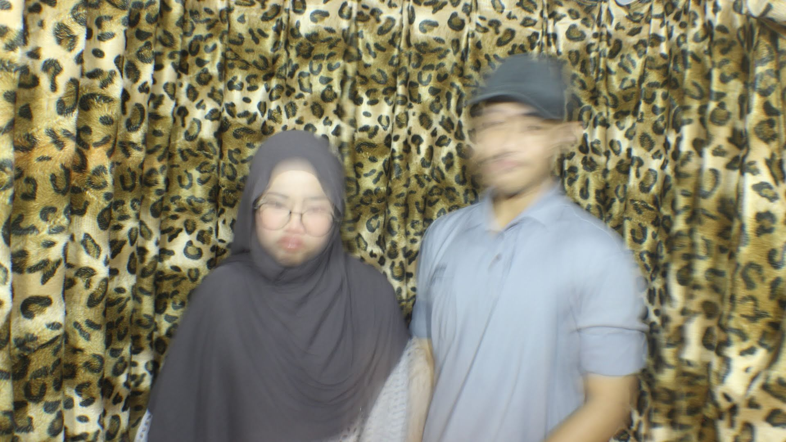

9 Agustus 2027
9 Agustus 2027
"Dan di antara tanda-tanda (kebesaran)-Nya ialah Dia menciptakan pasangan-pasangan untukmu dari jenismu sendiri, agar kamu cenderung dan merasa tenteram kepadanya, dan Dia menjadikan di antaramu rasa kasih dan sayang."
(QS. Ar-Rum: 21)
"mas, internet mati"

Putra dari Bapak Bonin & Ibu Nunung Nurhayati

Putri dari Ayah Rahmat & Ibu Seni Wati
Tanggal: 9 Agustus 2027
Waktu: 07:00 - 09:00
Lokasi: Gunung Sindur
Tanggal: 9 Agustus 2027
Waktu: Menyusul setelah Akad
Lokasi: Di rumah mempelai perempuan

Berawal dari beberapa hal di kantor, kami yang awalnya rekan kerja akhirnya menjalin hubungan. Awal mula sebelum confess cukup banyak hal lucu yang terjadi. Bahkan kami sudah cukup dekat dengan sering bercanda random dan larut dalam obrolan panjang.
Setelah kami resmi pada 15 April 2025, kami mulai backstreet di kantor, tapi tetap dekat dan menghabiskan waktu bersama di luar. Putri sangat manis setiap saya melihat dia, dan kami bersyukur bisa menjalani hubungan ini hingga hari pernikahan kami.
Doa restu Anda merupakan karunia yang sangat berarti bagi kami.
[ Detail amplop digital / hadiah akan disiapkan di sini nanti ]